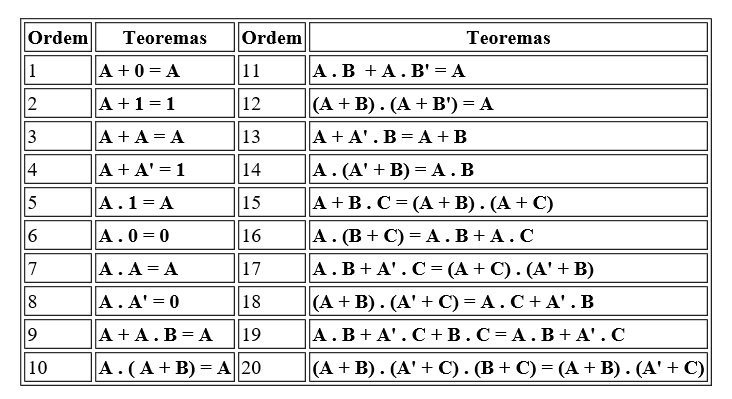

Os circuitos compostos por portas lógicas podem ser condensados em equações para melhor coompreensão das possíveis saídas.
Exemplo A + B = AB (Adição)
Porém, muitas dessas equacoes se tornam complicadas de realizar em um esquema geral, por isso podemos utilizar a tabela de postulados para simplifica-las!
Legenda: (letra) = 1 , (letra)' = 0
Além da tabela de postulados para simplificação, temos a Tabela / Mapa de Karnaugh que utiliza a tabela verdade ao invés da equação em sí.
1 -
2 -
3 -